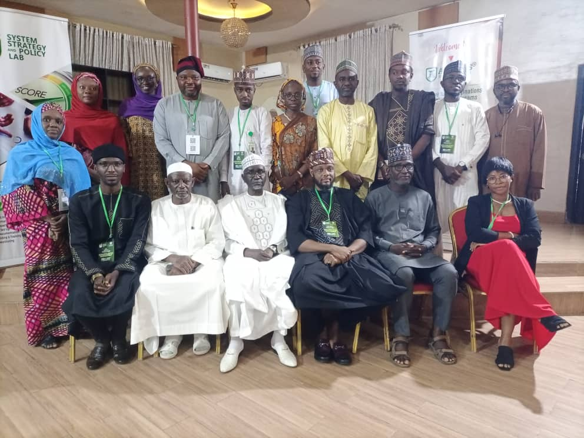

About AISGPR
A research-driven institute built on the conviction that Africa's future depends on stronger governance, better policy, and bolder leadership.

From a Bold Idea to a National Institute
African Institute for Strategic Governance and Policy Research was established in Abuja with a bold mandate: to bridge the longstanding gap between policy knowledge and governance practice in Nigeria and across Africa.
We recognised that Africa's greatest challenge is not a lack of resources, but a deficit of strategic institutions capable of translating rigorous research into real, lasting reform. So we built one.
Today, AISGPR is a growing force — training leaders, publishing strategic briefs, and convening dialogues that shape decision-making at the highest levels of government and civil society across Nigeria.
Mission & Vision
The principles guiding every decision, program and partnership we undertake.
Our Mission
To advance good governance, evidence-based policy, and strategic leadership in Nigeria and across Africa — empowering institutions and individuals to build sustainable, equitable societies.
Our Vision
A continent where every institution is accountable, every policy is evidence-driven, and every leader is equipped with the strategic capability to deliver lasting development impact.
Policy Focus Areas
Eight core domains driving our research, advocacy, and strategic development across Africa.
Economic Policy
Driving sustainable economic growth, trade frameworks, and fiscal resilience for developing nations.
Digital Economy & ICT
Fostering digital transformation, technological innovation, and data-driven governance systems.
Agriculture & Food Security
Advancing policies for resilient food systems, agricultural technology, and rural development.
Education & Human Capital
Reimagining education systems to build the workforce and strategic leaders of the future.
Governance & Institutions
Strengthening public institutions, accountability, and rule of law for effective statecraft.
Public-Private Partnerships
Creating frameworks for collaboration to tackle large-scale infrastructure and social challenges.
Comparative Development
Studying global models to adapt the best development strategies to the African context.
Sustainability and Climate
Integrating environmental resilience and green policies into broader strategic development goals.
Our Founders
The thought leaders behind AISGPR's mission to drive strategic governance across Africa.
Dr. Murtala Adogi Muhammed
Policy Analyst & StrategistDr. Murtala Adogi Muhammed is a distinguished policy analyst and strategist with over 15 years of experience in strategic planning, public sector governance, and institutional development. His extensive research portfolio focuses on sustainable development practices, evidence-based policy frameworks, and governance systems specifically tailored to African socio-political and economic landscapes. As a thought leader in development policy, Dr. Muhammed has advised numerous government agencies and international organizations on policy reform, institutional capacity building, and strategic governance initiatives. His work emphasizes the integration of local knowledge with global best practices, ensuring that policy solutions are contextually relevant and sustainable. Dr. Muhammed's analytical rigor and strategic vision have been instrumental in shaping transformative governance programs across the continent.
Abdul-Rahman Baban Saibo
Systems & Data AnalystAbdul-Rahman is a distinguished systems and data analyst with deep specialization in risk management and strategic analytics. With extensive experience in data-driven decision-making, he has pioneered innovative approaches to complex policy challenges across multiple sectors. His expertise in strategic systems design, predictive modeling, and evidence-based analysis has been instrumental in shaping the institute's rigorous approach to policy research and development. Abdul-Rahman's work bridges the gap between technical analysis and practical policy implementation, ensuring that data insights translate into actionable governance strategies.
Nasir Mohammed Bello
Development StrategistNasir Mohammed Bello serves as the CEO of Dar Al Andalus Center for Peace Building, bringing over a decade of transformative experience in conflict resolution, peacebuilding, and educational development across the African continent. His strategic vision encompasses community-driven development initiatives, interfaith dialogue facilitation, and capacity building for sustainable peace. With a proven track record in designing and implementing large-scale development programs, Bello has worked extensively with international organizations, government agencies, and civil society to foster inclusive governance and social cohesion. His holistic approach to development integrates cultural sensitivity with evidence-based practices, making him a leading voice in African peacebuilding and strategic development.
Aliyu A. Wali
International Law & Project ManagerAliyu A. Wali is a distinguished expert in international law enforcement cooperation with over 15 years of progressive experience leading complex inter-agency initiatives and cross-border collaboration programs. As a certified project manager (PMP) and strategic development professional, he brings exceptional expertise in business development, policy innovation, and institutional capacity building. His career spans multiple high-impact roles where he has successfully embedded innovation into policy frameworks, facilitated international partnerships, and driven organizational transformation. Aliyu's unique combination of legal expertise, project management acumen, and strategic vision enables him to navigate complex regulatory environments while delivering sustainable development outcomes. His leadership in fostering international cooperation and his commitment to excellence in governance have made him a respected voice in law enforcement policy and development strategy.
Be Part of the African Institute for Strategic Governance and Policy Research Story
Partner with us, fund a program, or join as a youth leader. Every contribution counts.